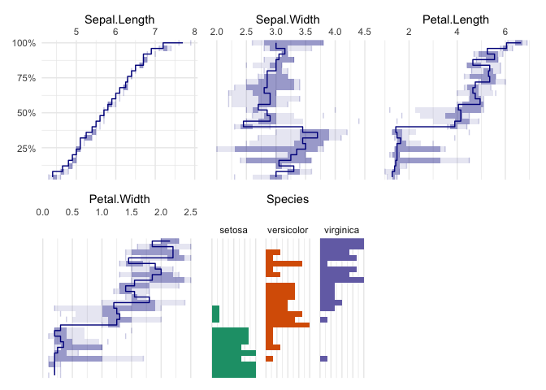
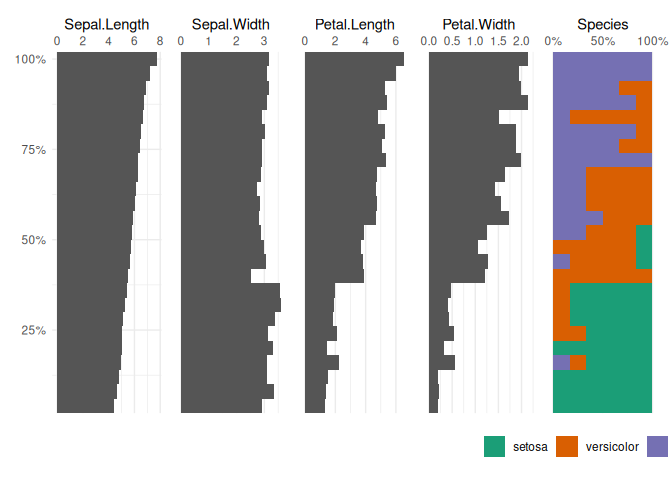
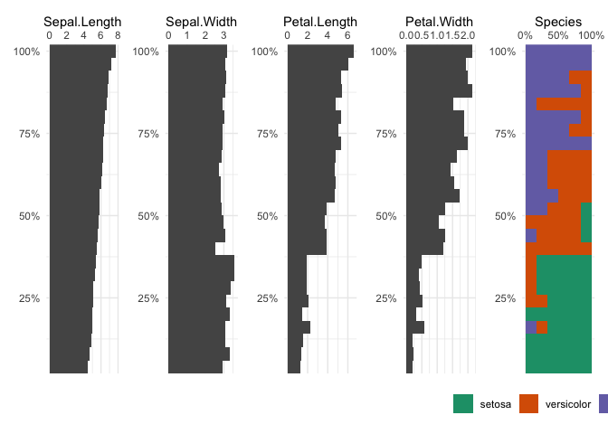
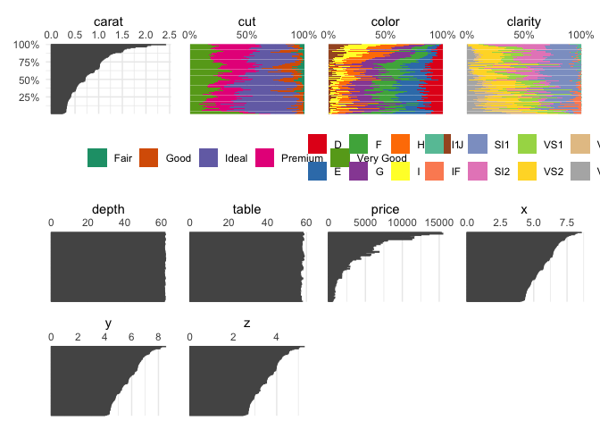
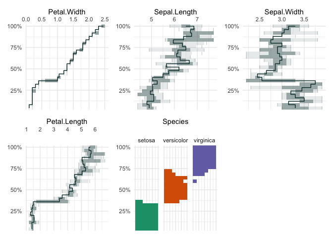
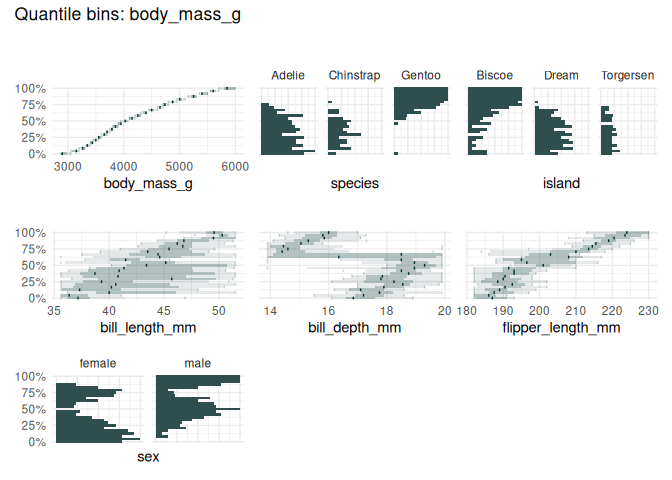
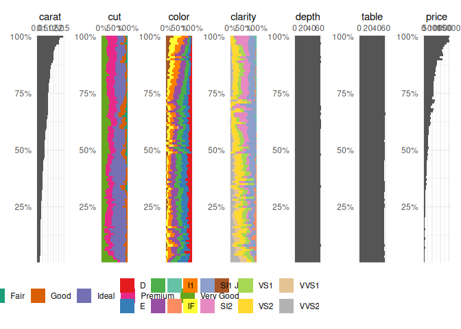
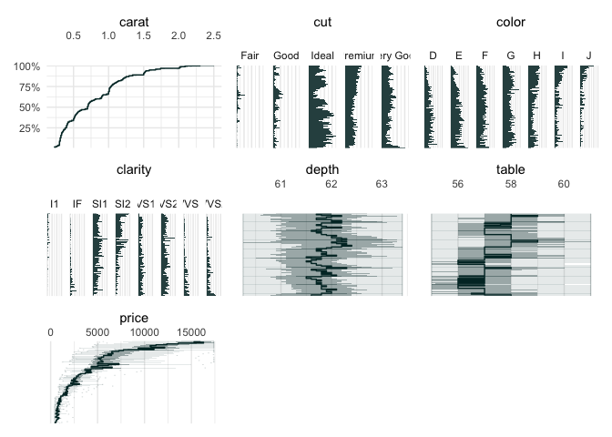
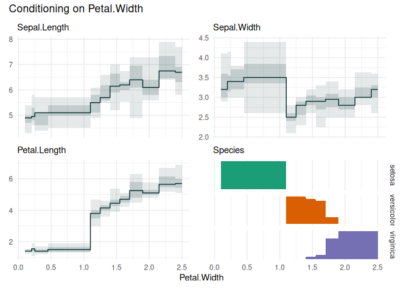

This package is in its early stages, not ready for production yet.
Installation
You can install the development version of qbinplot from GitHub with:
remotes::install_github("edwindj/qbinplot")Example
library(qbinplot)
#> Loading required package: ggplot2
## basic example codeA quantile binning boxplot
qbin_boxplot(iris, "Sepal.Length", n = 25, auto_fill = TRUE)
vs
A quantile binning barplot
qbin_barplot(iris, "Sepal.Length", 25, auto_fill = TRUE)
table_plot(iris, "Sepal.Length", 25, auto_fill = TRUE)
funq_plot(iris, "Sepal.Length", 25, auto_fill = TRUE)
Choosing “Petal.Width”
qbin_boxplot(iris, "Petal.Width", 25, auto_fill = TRUE)
library(palmerpenguins)
qbin_boxplot(penguins[1:7], c("body_mass_g"), 25)
Or the well-known diamonds dataset
data("diamonds", package = "ggplot2")
table_plot(diamonds[1:7], "carat")
data("diamonds", package = "ggplot2")
qbin_boxplot(diamonds[1:7], "carat")
funq_plot(diamonds[1:7], "carat")
We can zoom in on the carat variable, because the upper quantile bins are not very informative.
